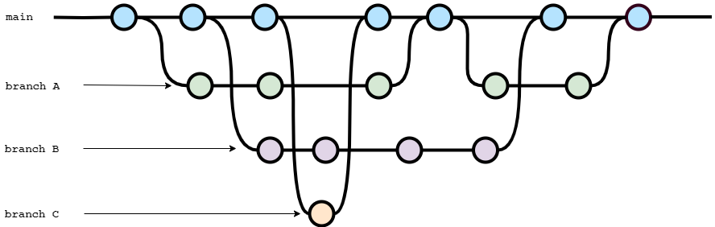

Chapter 1 Intro to Git & GitHub
Section 1.1 What Is Git?

Git is a distributed version control system that tracks changes in any set of computer files. This software was originally authored by Linus Torvalds in 2005 for development of the Linux kernel. Importantly, Git is free and open-source software, which means you have the legal and practical ability to use it however you want, and even modify it for your purposes if you wanted.
Two core concepts of Git are commits (illustrated in Figure 1.1.1 by circles) and branches (illustrated in Figure 1.1.1 by lines). A commit represents the state of your project at a particular point in its history. Branches allow this history to not be linear: you can branch off to experiment on a particular new feature, then merge this “feature branch” back into the “main branch” when it’s complete. This is particularly useful when multiple people collaborate (Chapter 5) on a Git-managed project. Finally, a Git project is often called a repository, or repo for short.
Since you’re reading GitHub for Mathematicians, I’m obligated to describe Git history as either a finite partial order, or a loopless directed graph, depending on your preferred flavor of mathematical models. In particular, you might consider the normal history of a file to be a linear order or directed path:
article.tex, then article-dec-1.tex, then article-dec-1-fixed.tex, and so on. But with Git, you don’t need to track your version history with filenames, you (and your colleagues) can branch your history into several timelines, you can merge them back together again, and look up the state of your project at any point where you committed your work.
Section 1.2 What Is GitHub?
Another key feature of Git is the ability to share your project, along with its history, with other people. This is generally accomplished by hosting your repository on a service such as GitHub: GitHub.com. (Other such services include BitBucket.org and GitLab.com.)
Importantly, GitHub is not itself open-source software, but is a service owned and operated by Microsoft. However, Microsoft makes GitHub available for use at no cost to the public, with additional “pro” features available for free to instructors and researchers.
We’ll use GitHub not only as a host for our repositories, but also to take advantage of all the tools it provides to author content using only a web browser. If you’ve looked into using Git in the past, you may have hesitated due to the apparent need for software developer experience to get started. However, using GitHub’s web applications, there will be no need for complicated installations or memorizing command line incantations like
git commit -m "foobar" to type into a terminal. (Of course, you still can choose to use such tools to get as much control over your Git project as you want, should the need ever arise: see [cross-reference to target(s) "ax-additional-topics" missing or not unique])
Another reason to use GitHub: community! GitHub is often marketed as a “social coding platform”, because it not only provides tools to create and deliver digital content, but it also provides social features such as Following users, Starring repositories, participation in Discussions and Issues, and more. Particular in open-source, we like to work together and support each other, and GitHub provides much of the social cyberinfrastructure necessary to do so efficiently.
Section 1.3 G4M on GitHub.com
An example of a project using Git and GitHub is the document you’re reading right now! This book is open-sourced and shared at
https://github.com/code4mathorg/github-for-mathematicians, and was authored completely in a web browser using only the GitHub features we will explore together in this handbook.